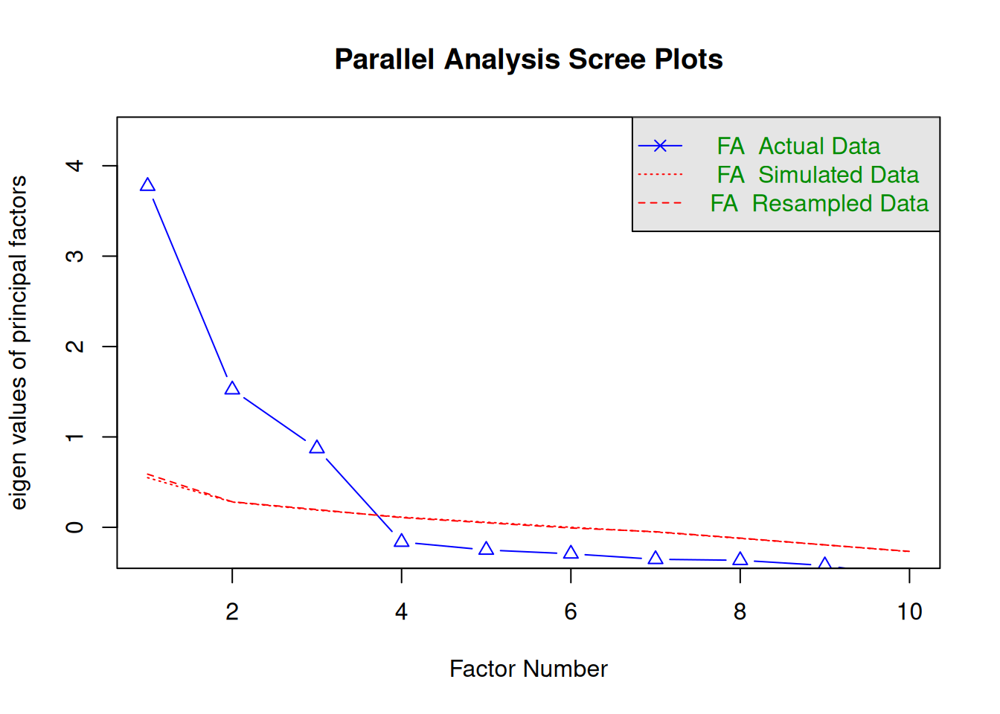
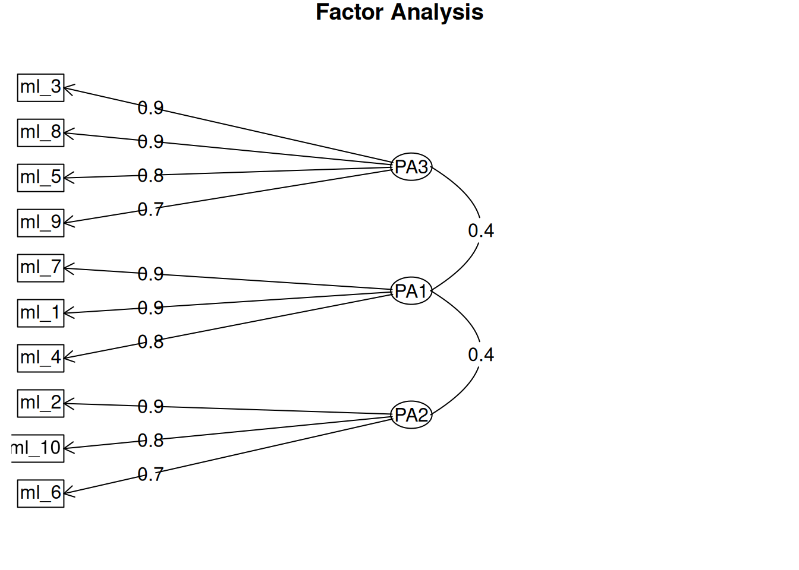

── Attaching core tidyverse packages ──────────────────────── tidyverse 2.0.0 ──
✔ dplyr 1.1.4 ✔ readr 2.1.5
✔ forcats 1.0.0 ✔ stringr 1.5.1
✔ ggplot2 3.5.2 ✔ tibble 3.3.0
✔ lubridate 1.9.4 ✔ tidyr 1.3.1
✔ purrr 1.1.0
── Conflicts ────────────────────────────────────────── tidyverse_conflicts() ──
✖ dplyr::filter() masks stats::filter()
✖ dplyr::lag() masks stats::lag()
ℹ Use the conflicted package (<http://conflicted.r-lib.org/>) to force all conflicts to become errors
Rows: 200 Columns: 39
── Column specification ────────────────────────────────────────────────────────
Delimiter: ","
dbl (39): id, age, female, edu_level, pol_ident, news_freq, trust_media, new...
ℹ Use `spec()` to retrieve the full column specification for this data.
ℹ Specify the column types or set `show_col_types = FALSE` to quiet this message.Factor Analysis
Identifying latent dimensions in scales
Why Factor Analysis?
Many concepts in the social sciences are too complex to be captured with a single question. Think of academic motivation, media literacy, or even happiness. Each of these is a latent construct: something that cannot be measured directly, but only through multiple related items. In surveys you won’t encounter a direct statement like: “My academic motivation is high” with a Likert scale. Instead, you might see a range of related statements such as “I look forward to studying,” “I keep working even when assignments are difficult,” or “I set goals for my learning.” Taken together, these items give us a better picture of the underlying latent construct. But what if these items reflect not one, but multiple underlying constructs?
Exploratory Factor Analysis (EFA) is a statistical technique that helps us figure out how many underlying dimensions (factors) exist in our data and which items belong together. In other words, it helps us see whether our items really measure one construct, or whether multiple related constructs are at play.
Imagine a researcher wants to capture respondents’ media literacy. Instead of asking one direct question like “How would you rate your media literacy?”, they design a series of concrete items. In this chapter, we’ll work with those items. Respondents rated the following ten statements on a 1–5 scale, ranging from ‘Strongly Disagree’ to ‘Strongly Agree’:
- I can distinguish between facts and opinions in the news.
- I share or post political content on social media.
- I recognize credible and non-credible news sources.
- I notice when news stories present only one side of an issue.
- I look at the date of an article before judging its relevance.
- I actively seek out diverse political viewpoints.
- I critically reflect on the framing of political issues.
- I check who published a news article before trusting it.
- I consider the intention behind a media message.
- I discuss political content I see online with others.
Take a moment to read through these ten statements yourself: do you spot any hidden patterns? Do you believe that they all reflect one construct of media literacy, or can you see them group into multiple factors, based on topics they tap into? This is exactly what EFA does, but based on math, rather then substantive interpretation: it looks at the patterns of correlations between items and groups them into meaningful clusters, that you will be able to interpret!
You might hear about Principal Component Analysis (PCA). While PCA also reduces data into fewer dimensions, it has a different goal (data reduction rather than uncovering latent constructs). In this course, we focus only on Factor Analysis.
Principal Axis Factoring
There are various methods and approaches in factor analysis. In this chapter we use the method of Principal Axis Factoring (PAF). The underlying model assumes that the correlations we observe between items are not direct causal effects between those items, but are explained by one or more hidden common factors. A metaphor: think of the items as puppets on a stage that seem to move together. PAF looks for the invisible strings above the stage. Once you remove those hidden strings, the puppets no longer move in sync. In statistical terms: if you remove the effect of the factor(s), the correlations between items disappear as much as possible.
Factor analysis for scale construction
Before we dive into the practical analysis, it’s helpful to place factor analysis within the broader process of scale construction. When building a scale, researchers typically: (1) identify indicators, (2) check the direction and distributions of the items, (3) determine the dimensionality with factor analysis, (4) test internal consistency with reliability analysis, (5) compute the scale(s) and (6) validate the scale(s). The main focus of this chapter is is Step 3: using factor analysis to uncover the dimensionality of our items.
In this chapter, we will work with the Media Literacy scale from our simulated Media & Democracy dataset (available on Canvas as polcomm_data.csv). Ten items (ml_1 to ml_10) were designed to measure media literacy.
Our key question is: Do these ten items measure a single underlying construct (general media literacy), or are there multiple dimensions hidden within them?
The answer to that question will then guide us further in to process of scale construction. Let’s find out how we can best measure media literacy!
Step 1: Inspect your data
We have loaded the dataset polcomm_data.csv - which is a simulated dataset (N = 200) containing various variables on media use, democracy and related topics - and names it d.
Before any analysis, it’s good practice to run descriptive statistics. This shows whether the items are coded consistently, whether all answer categories were used, and if there are missing values.
library(tidyverse)
library(summarytools)
Attaching package: 'summarytools'The following object is masked from 'package:tibble':
view# Look at the Media Literacy items
d |> select(ml_1:ml_10) |> descr()Descriptive Statistics
d
N: 200
ml_1 ml_10 ml_2 ml_3 ml_4 ml_5 ml_6 ml_7 ml_8 ml_9
----------------- -------- -------- -------- -------- -------- -------- -------- -------- -------- --------
Mean 3.71 2.80 2.79 3.32 3.60 3.36 2.75 3.73 3.27 3.21
Std.Dev 1.06 1.03 1.04 1.08 1.07 0.93 0.95 1.18 0.98 0.99
Min 1.00 1.00 1.00 1.00 1.00 1.00 1.00 1.00 1.00 1.00
Q1 3.00 2.00 2.00 3.00 3.00 3.00 2.00 3.00 3.00 3.00
Median 4.00 3.00 3.00 3.00 4.00 3.00 3.00 4.00 3.00 3.00
Q3 5.00 3.00 4.00 4.00 4.50 4.00 3.00 5.00 4.00 4.00
Max 5.00 5.00 5.00 5.00 5.00 5.00 5.00 5.00 5.00 5.00
MAD 1.48 1.48 1.48 1.48 1.48 1.48 1.48 1.48 1.48 1.48
IQR 2.00 1.00 2.00 1.00 1.25 1.00 1.00 2.00 1.00 1.00
CV 0.29 0.37 0.37 0.32 0.30 0.28 0.35 0.32 0.30 0.31
Skewness -0.40 0.27 0.27 -0.11 -0.30 -0.01 -0.05 -0.46 -0.11 0.07
SE.Skewness 0.17 0.17 0.17 0.17 0.17 0.17 0.17 0.17 0.17 0.17
Kurtosis -0.60 -0.37 -0.61 -0.75 -0.63 -0.63 -0.52 -0.86 -0.56 -0.52
N.Valid 200.00 200.00 200.00 200.00 200.00 200.00 200.00 200.00 200.00 200.00
N 200.00 200.00 200.00 200.00 200.00 200.00 200.00 200.00 200.00 200.00
Pct.Valid 100.00 100.00 100.00 100.00 100.00 100.00 100.00 100.00 100.00 100.00The output shows the means, standard deviations, and ranges. In our case, all items are measured on a 1–5 Likert scale, with no missing values. The averages hover around 3–4, which makes sense for survey data.
Step 2: Check correlations
Factor analysis is based on correlations between items. If items do not correlate, they probably don’t measure the same construct. And if an item shares no correlations with other items, it is probably redundant. On the other hand, if correlations are too high (above 0.8), it could also indicate redundancy.
library(sjPlot)
d |>
select(ml_1:ml_10) |>
tab_corr(p.numeric = TRUE)| ml_1 | ml_2 | ml_3 | ml_4 | ml_5 | ml_6 | ml_7 | ml_8 | ml_9 | ml_10 | |
| ml_1 | 0.276 (<.001) |
0.318 (<.001) |
0.769 (<.001) |
0.278 (<.001) |
0.241 (.001) |
0.857 (<.001) |
0.251 (<.001) |
0.325 (<.001) |
0.259 (<.001) |
|
| ml_2 | 0.276 (<.001) |
0.093 (.189) |
0.304 (<.001) |
0.205 (.004) |
0.670 (<.001) |
0.315 (<.001) |
0.086 (.228) |
0.176 (.012) |
0.696 (<.001) |
|
| ml_3 | 0.318 (<.001) |
0.093 (.189) |
0.280 (<.001) |
0.749 (<.001) |
0.113 (.112) |
0.354 (<.001) |
0.795 (<.001) |
0.704 (<.001) |
0.176 (.013) |
|
| ml_4 | 0.769 (<.001) |
0.304 (<.001) |
0.280 (<.001) |
0.293 (<.001) |
0.298 (<.001) |
0.809 (<.001) |
0.252 (<.001) |
0.344 (<.001) |
0.266 (<.001) |
|
| ml_5 | 0.278 (<.001) |
0.205 (.004) |
0.749 (<.001) |
0.293 (<.001) |
0.152 (.031) |
0.304 (<.001) |
0.693 (<.001) |
0.623 (<.001) |
0.227 (.001) |
|
| ml_6 | 0.241 (.001) |
0.670 (<.001) |
0.113 (.112) |
0.298 (<.001) |
0.152 (.031) |
0.286 (<.001) |
0.071 (.316) |
0.131 (.065) |
0.577 (<.001) |
|
| ml_7 | 0.857 (<.001) |
0.315 (<.001) |
0.354 (<.001) |
0.809 (<.001) |
0.304 (<.001) |
0.286 (<.001) |
0.270 (<.001) |
0.342 (<.001) |
0.263 (<.001) |
|
| ml_8 | 0.251 (<.001) |
0.086 (.228) |
0.795 (<.001) |
0.252 (<.001) |
0.693 (<.001) |
0.071 (.316) |
0.270 (<.001) |
0.659 (<.001) |
0.102 (.149) |
|
| ml_9 | 0.325 (<.001) |
0.176 (.012) |
0.704 (<.001) |
0.344 (<.001) |
0.623 (<.001) |
0.131 (.065) |
0.342 (<.001) |
0.659 (<.001) |
0.190 (.007) |
|
| ml_10 | 0.259 (<.001) |
0.696 (<.001) |
0.176 (.013) |
0.266 (<.001) |
0.227 (.001) |
0.577 (<.001) |
0.263 (<.001) |
0.102 (.149) |
0.190 (.007) |
|
| Computed correlation used pearson-method with listwise-deletion. | ||||||||||
Here we see a healthy mix: many correlations fall between 0.3 and 0.7, which is a sign that these items are related but not identical. At the same time, the output also shows a few very low correlations (close to 0), meaning that some items barely share variance with each other. This is not necessarily a problem, as long as each item correlates with at least some others. We also spot one or two correlations that are quite high (above 0.8), which could indicate that certain items are almost redundant — they may be tapping into exactly the same skill. Together, this pattern suggests that the items can form meaningful clusters, while also raising questions about whether some pairs overlap too much or too little.
Step 3: How many factors?
Before the actual factor analysis, that will give us information about the content of our factors, we would like to know how many factors we should extract in the first place.
For this, we use two common criteria:
- Scree plot / Cattell criterion: look at a plot of eigenvalues in descending order. The line will usually flatten out at some point. The “elbow” or kink indicates where meaningful factors stop and noise begins. Following the rule of thumb, you take the kink point minus one as the number of factors to extract.
- Kaiser criterion: check the eigenvalues themselves. Each eigenvalue reflects how much variance a factor explains. According to Kaiser, only factors with an eigenvalue greater than 1 (meaning they explain at least as much variance as a single item) should be kept. Factors below 1 are considered too weak to retain.
library(psych)
Attaching package: 'psych'The following objects are masked from 'package:ggplot2':
%+%, alphad |>
select(ml_1:ml_10) |>
fa.parallel(fa = "fa", fm = "pa")
Parallel analysis suggests that the number of factors = 3 and the number of components = NA Both the scree plot and the eigenvalues suggest that a three-factor solution is appropriate. If the criteria yield two different outcomes, we prioritize the scree plot. At the same time, remember there is also a third - less formal - criterion: interpretability. The mathematical rules give us a suggestion for the number of factors, but as researchers we need to check whether the resulting factors make substantive sense. If we cannot meaningfully interpret the clusters of items, the factor solution is not useful, even if the numbers suggest it is. This highlights that factor analysis is both a statistical and a substantive exercise.
Step 4: Run the factor analysis
Now we can actually run the factor analysis. We specify:
nfactors = 3→ we want three factors.rotate = "oblimin"→ an oblique rotation, allowing factors to correlate (realistic in social sciences).Rotation
Visualize a multi-dimensional space, in which each factor represents an axis (e.g. X or Y-axis). Each item is located somewhere in this space, based on their loadings on the respective factors. Rotation changes how the factors are aligned, which makes the loadings easier to interpret. Without rotation, items might load moderately on multiple factors, making it hard to see clear clusters. By rotating, we maximize loadings on one factor while minimizing them on others.
Broadly, there are two approaches to this: orthogonal rotation and oblique rotation. Orthogonal rotation (e.g. varimax) keeps the factors uncorrelated, with axes at a 90° angle. Oblique rotation (e.g. oblimin), which we use here, allows factors to correlate with each other. In social sciences, this is usually the more realistic choice, because underlying constructs often overlap to some extent.
fm = "pa"→ principal axis factoring (PAF), the method of factor analysis that is very common in EFA.
fa_result <- d |>
select(ml_1:ml_10) |>
fa(nfactors = 3, rotate = "oblimin", fm = "pa")Loading required namespace: GPArotationprint(fa_result)Factor Analysis using method = pa
Call: fa(r = select(d, ml_1:ml_10), nfactors = 3, rotate = "oblimin",
fm = "pa")
Standardized loadings (pattern matrix) based upon correlation matrix
PA3 PA1 PA2 h2 u2 com
ml_1 -0.01 0.91 -0.02 0.81 0.19 1
ml_2 -0.02 0.00 0.90 0.80 0.20 1
ml_3 0.92 0.01 -0.03 0.85 0.15 1
ml_4 0.01 0.84 0.04 0.73 0.27 1
ml_5 0.80 -0.02 0.09 0.67 0.33 1
ml_6 -0.03 0.04 0.74 0.56 0.44 1
ml_7 0.01 0.95 0.00 0.90 0.10 1
ml_8 0.88 -0.03 -0.05 0.75 0.25 1
ml_9 0.73 0.08 0.03 0.60 0.40 1
ml_10 0.06 -0.02 0.77 0.61 0.39 1
PA3 PA1 PA2
SS loadings 2.83 2.46 1.98
Proportion Var 0.28 0.25 0.20
Cumulative Var 0.28 0.53 0.73
Proportion Explained 0.39 0.34 0.27
Cumulative Proportion 0.39 0.73 1.00
With factor correlations of
PA3 PA1 PA2
PA3 1.00 0.38 0.19
PA1 0.38 1.00 0.37
PA2 0.19 0.37 1.00
Mean item complexity = 1
Test of the hypothesis that 3 factors are sufficient.
df null model = 45 with the objective function = 6.83 with Chi Square = 1330.27
df of the model are 18 and the objective function was 0.09
The root mean square of the residuals (RMSR) is 0.01
The df corrected root mean square of the residuals is 0.02
The harmonic n.obs is 200 with the empirical chi square 1.9 with prob < 1
The total n.obs was 200 with Likelihood Chi Square = 16.99 with prob < 0.52
Tucker Lewis Index of factoring reliability = 1.002
RMSEA index = 0 and the 90 % confidence intervals are 0 0.06
BIC = -78.38
Fit based upon off diagonal values = 1
Measures of factor score adequacy
PA3 PA1 PA2
Correlation of (regression) scores with factors 0.96 0.97 0.94
Multiple R square of scores with factors 0.93 0.94 0.88
Minimum correlation of possible factor scores 0.85 0.88 0.75The output includes a pattern matrix, which shows how strongly each item loads onto each factor. In Principal Axis Factoring, an item ‘loading’ strongly on a factor means that the variance in that item can be largely explained by that underlying factor. The loading is essentially a correlation: a high positive loading indicates that when the factor increases, the likelihood of agreeing with that item also increases. In other words, the factor is the hidden thread, and the loading shows how tightly the item is tied to it.
By default, the pattern matrix includes even very small loadings, which makes interpretation messy. We usually keep only loadings above 0.3. This makes it easier to see clusters of items:
fa_result$loadings |> print(cutoff = 0.3)
Loadings:
PA3 PA1 PA2
ml_1 0.913
ml_2 0.900
ml_3 0.924
ml_4 0.837
ml_5 0.801
ml_6 0.736
ml_7 0.947
ml_8 0.884
ml_9 0.729
ml_10 0.775
PA3 PA1 PA2
SS loadings 2.811 2.442 1.969
Proportion Var 0.281 0.244 0.197
Cumulative Var 0.281 0.525 0.722Now, the clusters are clear:
- Factor 1:
ml_1,ml_4,ml_7 - Factor 2:
ml_3,ml_5,ml_8,ml_9 - Factor 3:
ml_2,ml_6,ml_10
We can also visualize this:
fa.diagram(fa_result)
This diagram shows factors as circles, items as boxes, and arrows representing strong (> .3) loadings. The arrows indicate which items are strongly linked to which factors, based on their loadings in the pattern matrix. This visual is a direct translation of the principal axis factoring model you learned about earlier: the circles represent the hidden factors (the “invisible strings”), and the arrows represent how strongly those factors pull on each observed item. Because we applied an oblimin rotation, some circles may be connected with arrows, reflecting that the factors themselves can correlate. In short, the diagram helps you see at a glance which items cluster together under each latent construct and how those latent constructs may relate to each other.
Step 5: Interpret the factors
It’s up to the researcher to give meaning to the factors. Take another look at the ten Media Literacy items and the clusters in the pattern matrix. Can you group them yourself? Which items seem to belong together, and what label would you give to each group? Try it out – this interpretive step is part of what makes factor analysis more than just math.
This is how you might have interpreted the factors:
- Factor 1 (
ml_1,ml_4,ml_7): Analytical media literacy includes items about reflecting critically on content (distinguishing fact/opinion, spotting one-sidedness, reflecting on framing). - Factor 2 (
ml_3,ml_5,ml_8,ml_9): Source literacy includes items about judging source credibility (who published it, intention, date, credibility). - Factor 3 (
ml_2,ml_6,ml_10): Active engagement (as a part of media literacy) includes items about sharing, seeking diverse views, and discussing content online.
So, instead of one single Media Literacy scale, our analysis suggests there should be three distinct but related dimensions.
Step 6: Reliability of each factor
Once we have identified factors, we need to check whether the items in each factor form a reliable scale, in other words: whether the scales are internally consistent. This is where Cronbach’s alpha comes in.
We won’t go into detail here, since we have a full tutorial on Scale Construction, but here is how you would do it for the scale arising from Factor 1:
# Example for the Analytical factor
d |>
select(ml_1, ml_4, ml_7) |>
psych::alpha()
Reliability analysis
Call: psych::alpha(x = select(d, ml_1, ml_4, ml_7))
raw_alpha std.alpha G6(smc) average_r S/N ase mean sd median_r
0.93 0.93 0.9 0.81 13 0.0088 3.7 1 0.81
95% confidence boundaries
lower alpha upper
Feldt 0.91 0.93 0.94
Duhachek 0.91 0.93 0.94
Reliability if an item is dropped:
raw_alpha std.alpha G6(smc) average_r S/N alpha se var.r med.r
ml_1 0.89 0.89 0.81 0.81 8.5 0.015 NA 0.81
ml_4 0.92 0.92 0.86 0.86 12.0 0.011 NA 0.86
ml_7 0.87 0.87 0.77 0.77 6.6 0.018 NA 0.77
Item statistics
n raw.r std.r r.cor r.drop mean sd
ml_1 200 0.93 0.94 0.89 0.86 3.7 1.1
ml_4 200 0.92 0.92 0.85 0.82 3.6 1.1
ml_7 200 0.95 0.95 0.92 0.89 3.7 1.2
Non missing response frequency for each item
1 2 3 4 5 miss
ml_1 0.03 0.10 0.30 0.29 0.28 0
ml_4 0.03 0.11 0.34 0.28 0.25 0
ml_7 0.04 0.13 0.26 0.22 0.36 0The output will show that all three scales (Analytical, Source, Active) have high reliability (alpha > .8).
Step 7: Construct the scales
Finally, we compute new scale scores by averaging the items in each factor. In practice, this means creating new variables (ml_reflect, ml_source, ml_active) that take the mean of the items belonging to each factor. For example, the variable ml_reflect is calculated by summing items ml_1, ml_4, and ml_7 and dividing by 3 to compute an average that stays on the same 1–5 scale. This way, each respondent’s answers on individual items are combined into a single, interpretable score that represents their position on that underlying dimension.
d <- d |>
mutate(ml_reflect = (ml_1 + ml_4 + ml_7)/3,
ml_source = (ml_3 + ml_5 + ml_8 + ml_9)/4,
ml_active = (ml_2 + ml_6 + ml_10)/3)
# Inspect the new scales
d |> select(ml_reflect, ml_source, ml_active) |> descr()Descriptive Statistics
d
N: 200
ml_active ml_reflect ml_source
----------------- ----------- ------------ -----------
Mean 2.78 3.68 3.29
Std.Dev 0.88 1.03 0.88
Min 1.00 1.00 1.25
Q1 2.00 3.00 2.75
Median 2.67 3.67 3.25
Q3 3.33 4.67 3.75
Max 4.67 5.00 5.00
MAD 0.99 1.48 0.74
IQR 1.33 1.67 1.00
CV 0.32 0.28 0.27
Skewness 0.06 -0.39 -0.05
SE.Skewness 0.17 0.17 0.17
Kurtosis -0.64 -0.70 -0.63
N.Valid 200.00 200.00 200.00
N 200.00 200.00 200.00
Pct.Valid 100.00 100.00 100.00We now have three new variables that represent distinct aspects of media literacy. These can be used in further analysis, depending on the theoretical framework and research question.
Summary
Factor analysis is a powerful tool for uncovering the dimensionality of scales:
- It helps us determine whether a set of items measures one construct or multiple constructs.
- We decide on the number of factors using the scree plot and eigenvalues of components, but also check whether the solution is substantively interpretable.
- We interpret factors by looking at clusters of items with strong loadings and assigning them meaningful labels.
- Finally, we check for the internal consistency of our scales, before actually constructing them and applying them in an analysis.
In our Media Literacy example, instead of one general scale, we uncovered three meaningful dimensions: Analytical reflection, Source literacy, and Active engagement. This shows how factor analysis provides a richer and more accurate way of measuring how people understand and interact with media.